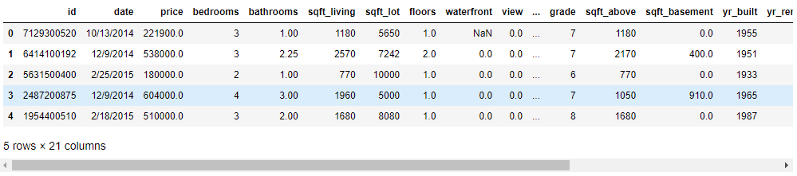
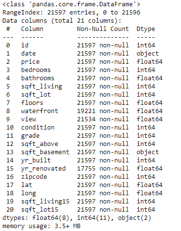
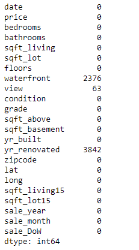

Import statements:
import pandas as pd
from datetime import datetime
import seaborn as sns
import matplotlib.pyplot as plt
%matplotlib inline
import statsmodels.api as sm
import scipy.stats as stats
from statsmodels.formula.api import ols
from sklearn.metrics import mean_squared_error
from sklearn.linear_model import LinearRegression
from sklearn.model_selection import train_test_split
from scipy.stats import norm
from statsmodels.stats.outliers_influence import variance_inflation_factor
Reading in the dataset:
df = pd.read_csv('kc_house_data.csv')
df.head()

Exploring and cleaning the dataset:
df.info()

# Looping through each column and printing the top 5 values of each
for col in df.columns:
try:
print(col, df[col].value_counts()[:5])
except:
print(col, df[col].value_counts())
print('\n')
del df['id']
df['date'] = pd.to_datetime(df['date'])
df['sale_year'] = df['date'].dt.year
df['sale_month'] = df['date'].dt.month
df['sale_DoW'] = df['date'].dt.dayofweek
df['date'] = df['date'].astype(object)
df.isna().sum()

print(f"Percentage Missing: {round(df['waterfront'].isna().sum()/len(df)*100,3)}%")
print(f"Percentage Missing: {round(df['view'].isna().sum()/len(df)*100,3)}%")
print(f"Percentage Missing: {round(df['yr_renovated'].isna().sum()/len(df)*100,3)}%")

del df['waterfront']
del df['yr_renovated']
df.dropna(subset=['view'], inplace=True)
df['sqft_basement'].value_counts()